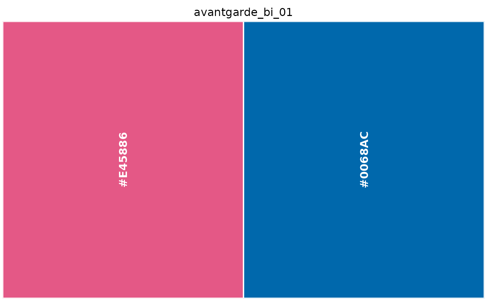

The 36 palettes of the Avant Garde collection, each a character vector of hex colours in printed swatch order.
Usage
avantgarde_bi_01
avantgarde_bi_02
avantgarde_bi_03
avantgarde_bi_04
avantgarde_bi_05
avantgarde_bi_06
avantgarde_bi_07
avantgarde_bi_08
avantgarde_tri_01
avantgarde_tri_02
avantgarde_tri_03
avantgarde_tri_04
avantgarde_tri_05
avantgarde_tri_06
avantgarde_tri_07
avantgarde_tri_08
avantgarde_tri_09
avantgarde_tri_10
avantgarde_tri_11
avantgarde_four_01
avantgarde_four_02
avantgarde_four_03
avantgarde_four_04
avantgarde_four_05
avantgarde_four_06
avantgarde_four_07
avantgarde_multi_01
avantgarde_multi_02
avantgarde_multi_03
avantgarde_multi_04
avantgarde_multi_05
avantgarde_multi_06
avantgarde_multi_07
avantgarde_multi_08
avantgarde_multi_09
avantgarde_multi_10Format
A character vector of hex colour strings.
avantgarde_bi_01: bicolor, 2 colours (#E45886, #0068AC).
avantgarde_bi_02: bicolor, 2 colours (#F7DB00, #34A643).
avantgarde_bi_03: bicolor, 2 colours (#C81839, #A675AA).
avantgarde_bi_04: bicolor, 2 colours (#036EB8, #FCEBEF).
avantgarde_bi_05: bicolor, 2 colours (#3DB1DD, #D74288).
avantgarde_bi_06: bicolor, 2 colours (#A44295, #F5C826).
avantgarde_bi_07: bicolor, 2 colours (#D53921, #68C0A5).
avantgarde_bi_08: bicolor, 2 colours (#8F3C89, #EFE531). Contains a provisional reading; see palettes_needing_review().
avantgarde_tri_01: tricolor, 3 colours (#E60012, #FEEACD, #004FA3).
avantgarde_tri_02: tricolor, 3 colours (#A7DAE5, #006BB9, #E72410).
avantgarde_tri_03: tricolor, 3 colours (#F6C3D9, #FFF100, #A7A8A8).
avantgarde_tri_04: tricolor, 3 colours (#25B17C, #E84136, #FFF000).
avantgarde_tri_05: tricolor, 3 colours (#3DAEE4, #F5EF6A, #EBDDD5).
avantgarde_tri_06: tricolor, 3 colours (#FFF100, #E62E8B, #00A0E9).
avantgarde_tri_07: tricolor, 3 colours (#009944, #FFF100, #D7D7D8).
avantgarde_tri_08: tricolor, 3 colours (#08338D, #009A5B, #00B1AF).
avantgarde_tri_09: tricolor, 3 colours (#CC386D, #00A48C, #00A8D9).
avantgarde_tri_10: tricolor, 3 colours (#000000, #00ABEB, #FFF100).
avantgarde_tri_11: tricolor, 3 colours (#8C4791, #D20F2A, #FFFDE1).
avantgarde_four_01: four-color, 4 colours (#F2AB16, #E60012, #40A58F, #0074BA).
avantgarde_four_02: four-color, 4 colours (#E4007F, #00A0E9, #FFF100, #000000).
avantgarde_four_03: four-color, 4 colours (#C8C9D0, #F0EDEC, #22A8E1, #EA5A46).
avantgarde_four_04: four-color, 4 colours (#EE806C, #FEEAB6, #29B5A0, #F7CBDF).
avantgarde_four_05: four-color, 4 colours (#5192CF, #FADCE9, #BBE4F9, #E69900).
avantgarde_four_06: four-color, 4 colours (#FFF100, #22AC38, #EB688C, #9FA0A0).
avantgarde_four_07: four-color, 4 colours (#ECE822, #EA5973, #0096D6, #9CCA43).
avantgarde_multi_01: multicolor, 6 colours (#146AB5, #EB5F56, #DCDDDD, #D1DD21, #E62D7B, #2FAF58).
avantgarde_multi_02: multicolor, 6 colours (#727171, #146AB5, #E62D7B, #DCDDDD, #CFDD21, #2FAF58).
avantgarde_multi_03: multicolor, 5 colours (#0080C0, #F4A000, #E60823, #357A4D, #EA639D).
avantgarde_multi_04: multicolor, 5 colours (#25B3DC, #E60614, #EF8BB2, #F7B009, #1C8960).
avantgarde_multi_05: multicolor, 6 colours (#E60012, #00A0E9, #8FC31F, #F8B62D, #F0C18F, #FAD8BC). Contains a provisional reading; see palettes_needing_review().
avantgarde_multi_06: multicolor, 5 colours (#F29100, #FFF208, #62C6F2, #FBE0EA, #E5004E). Contains a provisional reading; see palettes_needing_review().
avantgarde_multi_07: multicolor, 6 colours (#005DAD, #ED6A50, #ADCE00, #009C42, #929292, #E60012).
avantgarde_multi_08: multicolor, 5 colours (#EC7099, #114A9C, #FFF108, #53C0D6, #C067A5).
avantgarde_multi_09: multicolor, 6 colours (#004A9F, #00AEE1, #E17094, #E7D378, #C4C8E5, #51B5AE).
avantgarde_multi_10: multicolor, 5 colours (#E9C265, #194098, #51C0DC, #F7DCEA, #95C970). Contains a provisional reading; see palettes_needing_review().
Details
4 of them contain a provisional reading and are marked
"review" in the catalogue; see palettes_needing_review().
Examples
avantgarde_bi_01
#> [1] "#E45886" "#0068AC"
show_palette(avantgarde_bi_01)
